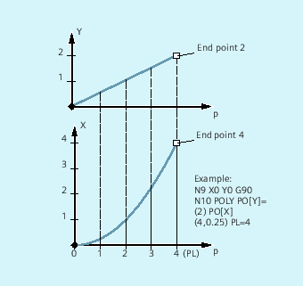
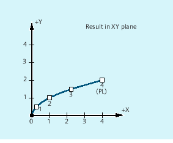

It actually involves a polynomial interpolation (POLY) and not a spline interpolation type. Its main purpose is to act as an interface for programming externally generated spline curves where the spline sections can be programmed directly.
This mode of interpolation relieves the NC of the task of calculating polynomial coefficients. It can be optimally applied in cases where the coefficients are supplied directly by a CAD system or post processor.
3rd degree polynomial:
POLY PO[X]=(xe,a2,a3) PO[Y]=(ye,b2,b3) PO[Z]=(ze,c2,c3) PL=n5th degree polynomial and new polynomial syntax:
POLY X=PO(xe,a2,a3,a4,a5) Y=PO(ye,b2,b3,b4,b5) Z=PO(ze,c2,c3,c4,c5) PL=nPOLYPATH("AXES","VECT")| Note |
The sum of the polynomial coefficients and axes programmed in an NC block must not exceed the maximum permitted number of axes per block. |
| Activation of polynomial interpolation with a block containing POLY. |
| Polynomial interpolation can be selected for both AXIS or VECT axis groups |
| End points and polynomial coefficients |
| Axis identifier |
| Specification of end position for the particular axis; value range as for path dimension |
| The coefficients a2, a3, a4, and a5 are written with their value; value range as for path dimension. The last coefficient in each case can be omitted if it equals zero. |
| Length of the parameter interval where polynomials are defined (definition range of the function f(p)). The interval always starts at 0, p can assume values from 0 to PL. Theoretical value range for PL: Note: |
The polynomial interpolation is activated in the part program using the POLX G command.
The POLY G command together with G0, G1, G2, G3, ASPLINE, BSPLINE and CSPLINE belong to the 1st group.
Axes, which are only programmed with name and end point (e.g. X10), are linearly moved. If all axes of an NC block are programmed in this way, the control behaves the same as for G1.
The polynomial interpolation is implicitly deactivated again by programming another command of the 1st G group G0, G1).
The PO value (PO[]=) or ...=PO(...) specifies all polynomial coefficients for an axis. Several values are specified, separated by commas corresponding the degree of the polynomial. Different degrees of polynomials are possible for various axes within one block.
Using POLYPATH(...), the polynomial interpolation can be selectively released for certain axis groups:
Only path axes and supplementary axes: |
| |
Only orientation axes: |
|
The axes that are not released are linearly moved.
Polynomial interpolation is enabled as standard for both axis groups.
Polynomial interpolation is deactivated for all axes by programming without the POLYPATH( ) parameter.
| Program code | Comment |
|---|---|
| N10 G1 X… Y… Z… F600 | |
| N11 POLY PO[X]=(1,2.5,0.7) PO[Y]=(0.3,1,3.2) PL=1.5 | ; Polynomial interpolation on |
| N12 PO[X]=(0,2.5,1.7) PO[Y]=(2.3,1.7) PL=3 | |
| ... | |
| N20 M8 H126 … | |
| N25 X70 PO[Y]=(9.3,1,7.67) PL=5 | ; Mixed data for the axes |
| N27 PO[X]=(10,2.5) PO[Y]=(2.3) | ; No PL programmed; PL=1 applies |
| N30 G1 X… Y… Z. | ; Polynomial interpolation off |
| … |
Polynomial syntax that is still valid | New polynomial syntax |
|---|---|
| PO[axis identifier]=(.. , ..) | Axis identifier=PO(.. , ..) |
| PO[PHI]=(.. , ..) | PHI=PO(.. , ..) |
| PO[PSI]=(.. , ..) | PSI=PO(.. , ..) |
| PO[THT]=(.. , ..) | THT=PO(.. , ..) |
| PO[]=(.. , ..) | PO(.. , ..) |
| PO[variable]=IC(.. , ..) | variable=PO IC(.. , ..) |
Programming
| Program code | |
|---|---|
| N9 X0 Y0 G90 F100 | |
| N10 POLY PO[Y]=(2) PO[X]=(4,0.25) PL=4 |
Shape of the curves X(p) and Y(p)
Shape of the curve in the XY plane
See also:
Polynomial interpolation (POLY, POLYPATH, PO, PL): Further Information
Settable path reference (SPATH, UPATH)